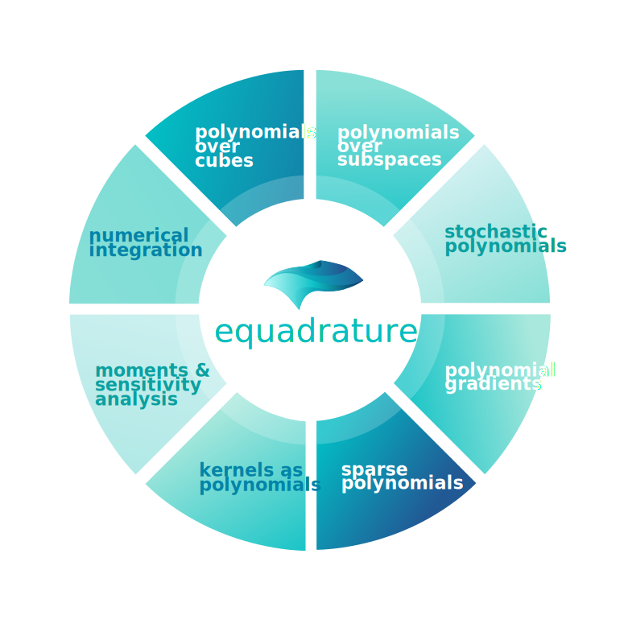
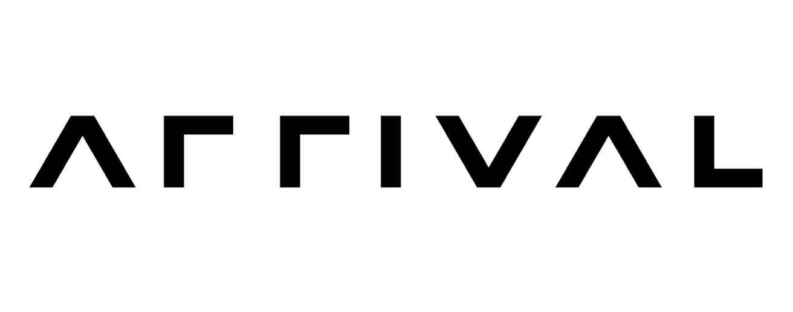
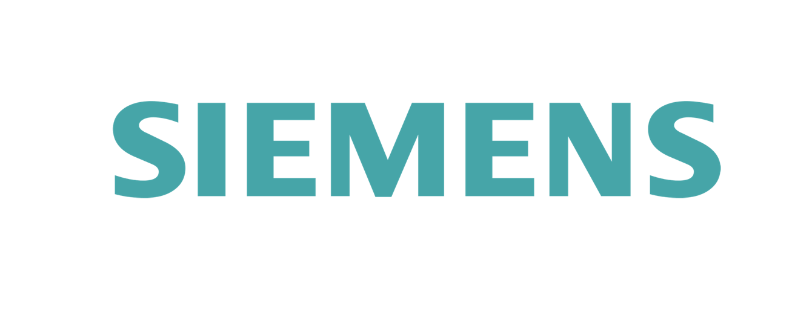

Learn Continuous Structure
equadratures is an open-source python framework for fitting models to data. It may be used for polynomial regression, sparse polynomial approximation, subspace-based dimension reduction, polynomial chaos, and more recently for kernel-based learning. Underneath the hood it leverages numerical quadrature and orthogonal polynomials. To learn more about what else you can do with equadratures, click one of the topics on the wheel.
DOWNLOAD & RUN
To install equadratures, you can either use pip via
pip install equadratures
or you can directly download the latest package from
Github. To build your first model, try the following:
# Let us fit a polynomial to 5sin(10*x1) + 3cos(10*x2)
import equadratures as eq
x = eq.Parameter(lower=-1, upper=1, order=5)
basis = eq.Basis('tensor-grid')
poly = eq.Poly([x,x], basis, method='numerical-integration')
poly.set_model(lambda x: 5*np.sin(10*x[0]) + 3*np.cos(10*x[1]))
# For computing moments
poly.get_mean_and_variance()
# ..and to get 1st order Sobol' indices
poly.get_sobol_indices(order=1)
pip install equadratures
# Let us fit a polynomial to 5sin(10*x1) + 3cos(10*x2)
import equadratures as eq
x = eq.Parameter(lower=-1, upper=1, order=5)
basis = eq.Basis('tensor-grid')
poly = eq.Poly([x,x], basis, method='numerical-integration')
poly.set_model(lambda x: 5*np.sin(10*x[0]) + 3*np.cos(10*x[1]))
# For computing moments
poly.get_mean_and_variance()
# ..and to get 1st order Sobol' indices
poly.get_sobol_indices(order=1)
CODE USAGE & IMPACT
Many organisations have and continue to use equadratures for a variety of tasks. If your organisation would like to learn more about equadratures, please do drop us a message at mail [at] equadratures.org. Additionally, feel free to check out some of the case studies above.



